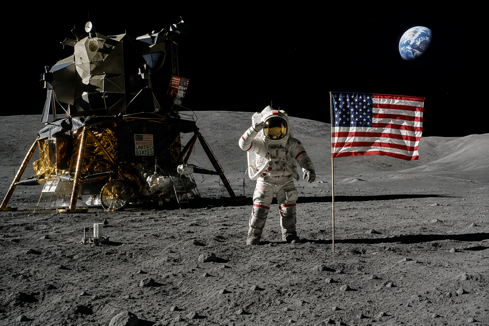
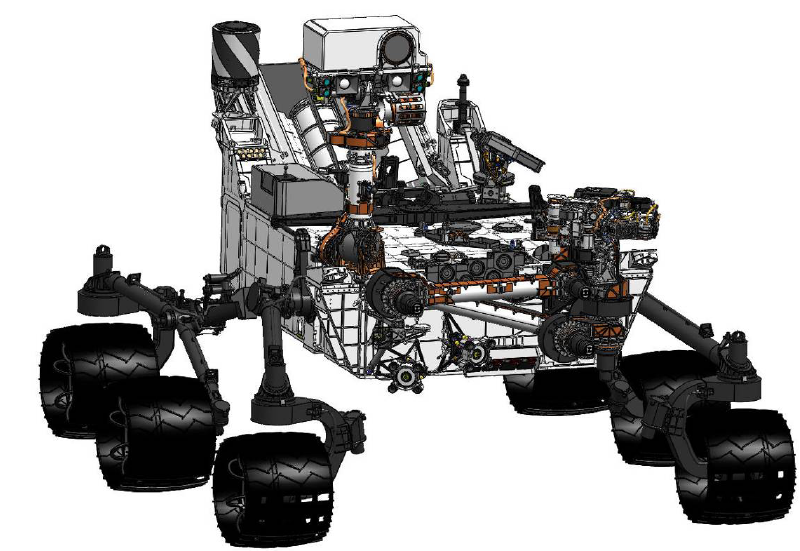
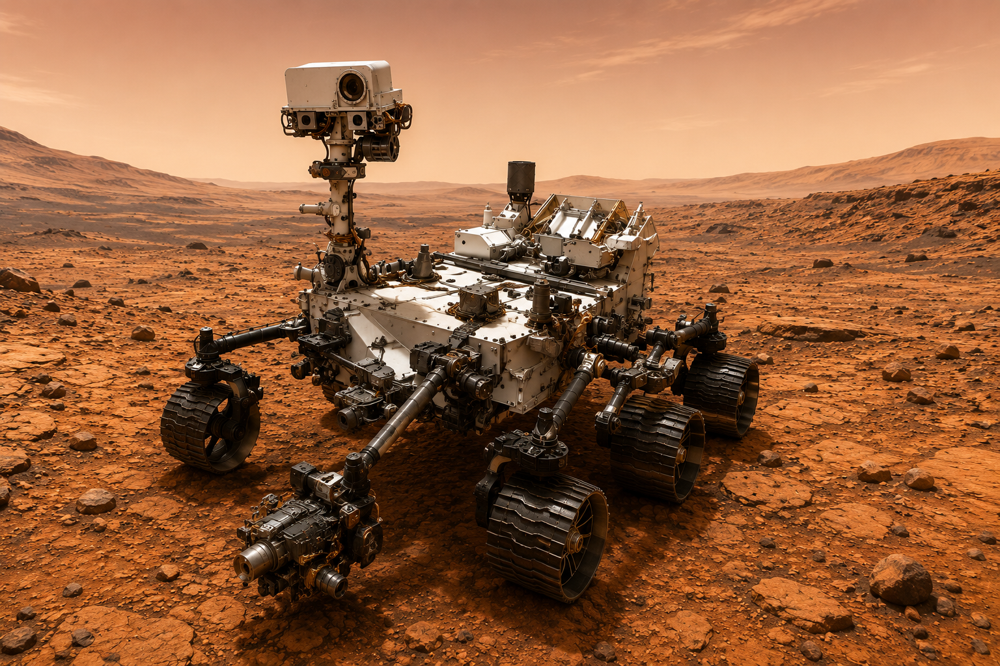
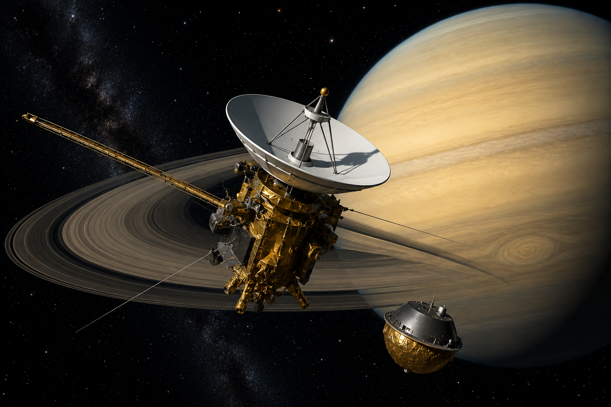

1969
Apollo 11
A missão que levou os primeiros seres humanos à superfície da Lua.
Descubra as missões que ajudaram a humanidade a conhecer melhor a Lua, Marte, os planetas e os mistérios do Universo.
Clique em uma missão para conhecer sua história.

A missão que levou os primeiros seres humanos à superfície da Lua.

Duas sondas que viajaram pelos planetas gigantes e continuam explorando o espaço.

O rover que explora Marte em busca de pistas sobre o passado do planeta.

Um dos maiores telescópios espaciais já construídos para observar o Universo.

Rover enviado a Marte para procurar sinais de vida microbiana antiga.

Uma missão que revelou detalhes incríveis sobre Saturno e suas luas.
História da missão.
Objetivo da missão.
História da missão.